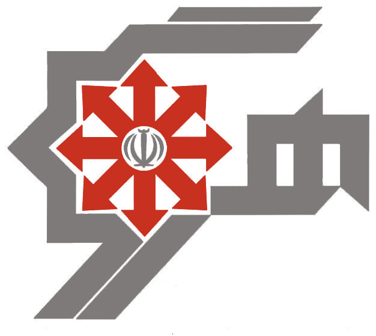

هوگر، درخشش انسجام و همکاری دانش آموزی
مرکز استعداد های درخشان شهید سلطانی 3 کرج هر ساله با کوشش و همت دانش آموزان، همایشی با عنوان دستاوردهای علمی و پژوهشی هوگر برگزار می کند. این همایش تنها همایش علمی پژوهشی دانش آموزی مستقل در سطح استان البرز می باشد که در سال 1383 پایه گذاری شده و اسفند ماه هر سال در دبیرستان شهید سلطانی 3 برگزار می گردد. امسال برای هشتمین دوره، اعضای کادر برگزار کننده ی این همایش که متشکل از دانش آموزان این مرکز می باشد تلاش خود را بر آن نهاده اند تا با برنامه ریزی ای نظام مند و مدبّرانه به هدف ارتقا و برگزاری هرچه بهتر همایش دست پیدا کنند.
در شبکه های اجتماعی ما را با هش تگ #هوگر بیابید.